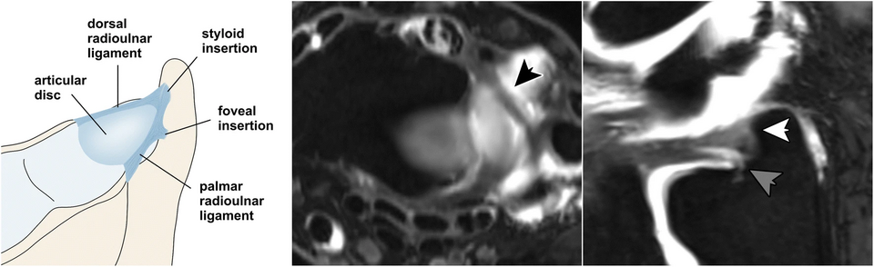
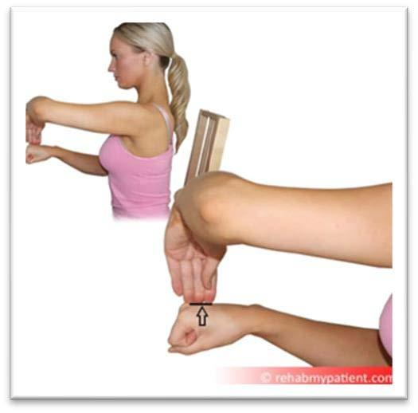
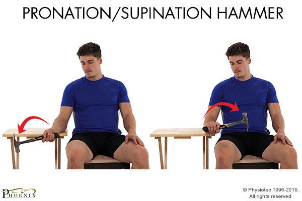
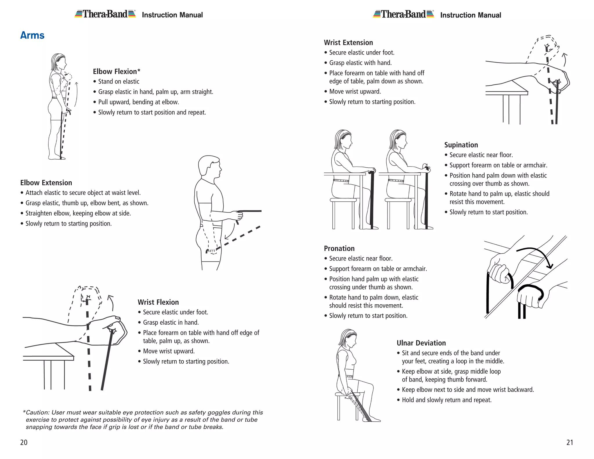

长期 TFCC 的重点，
是"稳定生活"。
对于长期电脑办公的人来说，
真正容易反复刺激 TFCC 的，
往往不是一次大的动作，
而是：
长时间鼠标操作、
手腕悬空、
单手拎包、
手机小拇指承重、
以及长期重复的轻微扭转。
恢复的目标，
不是完全不用手，
而是：
让手腕重新拥有长期耐受能力。
TFCC 是什么？为什么会痛？

三角纤维软骨复合体（TFCC）
位于手腕尺侧（小拇指一侧），是一组纤维软骨和韧带的组合。
主要功能：
- 稳定远端桡尺关节（DRUJ）
- 缓冲尺骨与腕骨之间的压力
- 允许前臂旋转时的微动
- 承担约20%的手腕负重
为什么容易受伤？
长期鼠标使用、手腕尺偏位、旋转动作会造成持续剪切力，导致TFCC磨损或撕裂。加上血供较差，恢复缓慢。
三类损伤触发机制
🔴 压缩型负荷
手撑地、俯卧撑
→ TFCC受压迫
🟠 剪切型负荷
尺偏 + 旋转
→ TFCC撕裂风险
🟡 持续性微损伤
长时间鼠标/手机
→ 慢性炎症累积
当前状态自查系统
按压测试
轻轻按压尺骨小头附近的凹陷区域。 如果明显刺痛、 酸胀增加， 说明当前刺激较高。
旋转测试
缓慢做旋前 / 旋后动作。 如果在末端出现明显不适、 发虚、 卡顿感， 说明当前稳定性不足。
办公耐受测试
连续使用鼠标 20~30 分钟后， 观察尺侧是否开始紧张、 发酸、 疲劳感明显。
核心避免事项
这些动作和姿势是 TFCC 反复刺激的主要来源，比任何康复训练都更重要的是：先减少持续伤害。
避免长时间撑腕
❌ 尽量避免：
- 俯卧撑
- 平板支撑
- 手撑桌子起身
- 床上撑起身体
减少尺偏位
尺偏位 就是手腕向小拇指方向歪斜的姿势。
这是 TFCC 的高压位！
很多人在以下情况会长期保持这个姿势：
- 使用鼠标时
- 托腮
- 端手机
- 侧躺玩手机
分阶段康复训练体系
TFCC 康复不是"练越多越好"，而是选对阶段、循序渐进。请根据当前状态选择对应阶段的训练。
急性期 (1-2周)
疼痛明显、不敢发力
恢复期 (2-6周)
疼痛减轻、可轻度活动
强化期 (6周+)
基本无痛、准备回归日常

1. 等长训练（Isometric）
核心原则：先不大幅活动。
手腕保持中立位，另一只手给予轻微对抗阻力，重点不是力量，而是"稳住不晃"。
- 每次保持 10-20 秒
- 无明显疼痛
- 非常适合长期办公后、手腕发虚的时候
优点：
- 对 TFCC 刺激较小
- 能重新建立稳定感

2. 轻阻力旋前/旋后
这是 TFCC 康复核心之一
手握轻量长柄物体（小锤子、弹力带、0.5-1kg），极慢速地向两侧旋转。
但必须：
- 超轻重量
- 慢速控制
- 无明显疼痛
- 12-15 次/组

3. 锤子/杠杆训练
用于渐进负荷 + TFCC 稳定控制
使用小锤子或类似物体，通过杠杆原理进行控制性训练。
推荐方式：
- 从极轻重量开始
- 重点是控制，不是幅度
- 配合旋前/旋后动作
- 缓慢、稳定、可控

4. 弹力带腕部训练
轻量腕屈伸、握力训练，帮助建立周围肌群支撑。
- 使用极轻阻力弹力带
- 避免疼痛范围
- 重点是控制，不是力量
- 可结合旋前/旋后动作
长期办公生存系统
✅ 推荐办公方式
- 前臂必须有支撑，而不是只有手腕受力
- 鼠标靠近身体，避免手臂长期外展
- 优先考虑垂直鼠标 / 人体工学鼠标
- 键盘不要太高，避免长期翘腕
- 每 30~40 分钟改变一次姿势
- 避免连续几小时保持一个姿势
❌ 常见隐藏刺激源
- 小拇指托手机
- 长时间 Trackpad
- 手腕悬空用鼠标
- 侧躺玩手机
- 单手拎电脑包
- 长期撑桌起身
日常避免 / 替代 SOP
❌ 尽量避免
✅ 更推荐
理疗方案：冲击波（ESWT）
目前证据水平
目前对于 TFCC 的冲击波证据并不像跟腱炎、足底筋膜炎那么强。
TFCC 本身属于纤维软骨 + 韧带复合结构，而不是典型肌腱。
所以冲击波更偏向于：
- 辅助镇痛
- 改善局部代谢
- 缓解慢性炎症
而不是"修复撕裂"
✅ 可能更适合尝试的情况
- 慢性疼痛
- 长期炎症刺激
- 康复已经停滞
- 不想立刻手术
- 辅助保守治疗
⚠️ 需要谨慎的情况
如果存在以下情况，冲击波可能意义有限：
- 明显 DRUJ 不稳
- 一转腕就"咔"响
- 明显无力、撑不住
- 怀疑较大撕裂
什么时候建议尽快看手外科
以下是"别再硬扛"的明确信号：
需要专业评估的信号
- 明显卡顿 / 咔哒声 — 尤其伴随疼痛
- 旋转明显无力 — 例如：拧瓶盖不行、端锅不稳
- 夜间疼醒 — 说明炎症程度较高
- 越来越不敢发力 — 说明稳定性可能在下降
- 保守治疗 3-6 个月无改善 — 可能需要影像学进一步评估